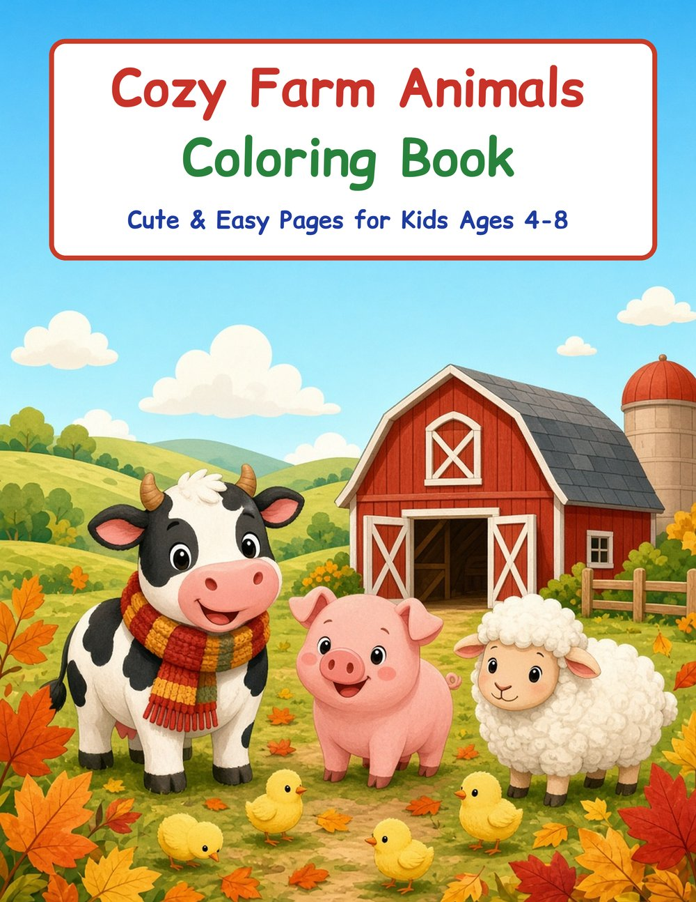
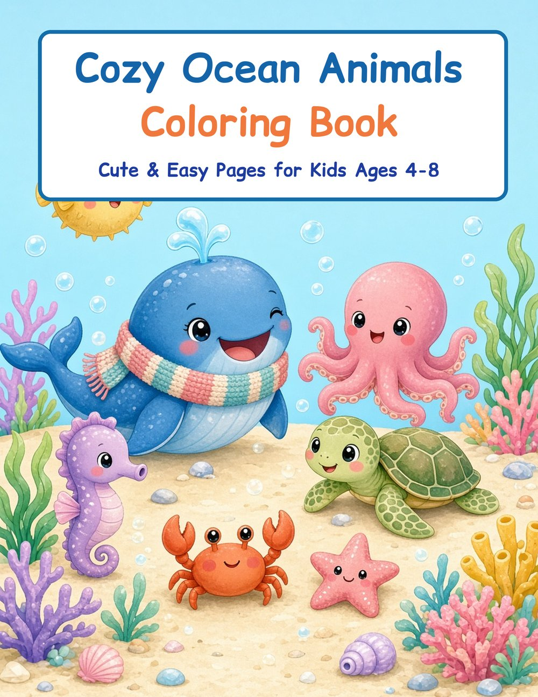
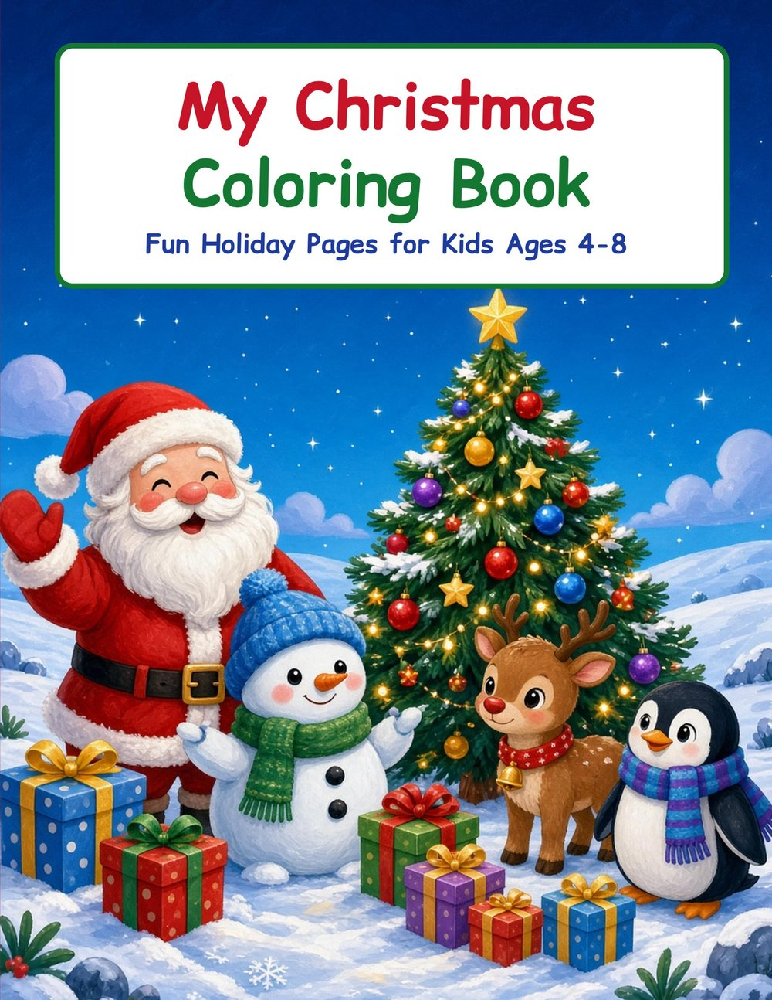
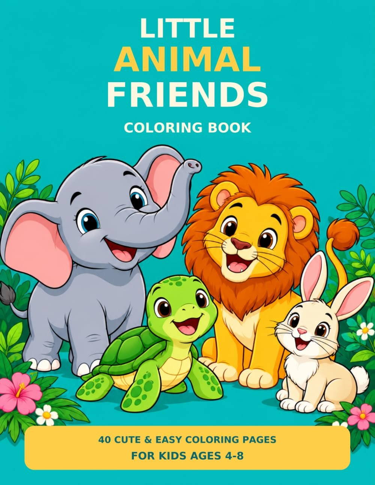

By Luna Rose
Coloring Books by Luna Rose
Paperback coloring books for kids ages 4–8, written and published by the owner of VoltPick.
These are the site owner's own books. They are written and published by the owner of VoltPick under the author name Luna Rose. This page is a catalog of those titles, not an independent product review.

Cozy Farm Animals Coloring Book
A paperback coloring book for kids ages 4–8 with 25 original single-sided farm animal designs, including cows, pigs, sheep, chicks and horses. The listing describes big, bold outlines and simple shapes, a blank back behind each design so markers will not bleed through, and a “This book belongs to” page. 8.5 x 11 inches; 54 print pages.
View on Amazon

Cozy Ocean Animals Coloring Book
A paperback coloring book for kids ages 4–8 with 25 original single-sided ocean animal designs, including whales, an octopus, turtles, crabs and seahorses. The listing describes big, bold outlines and simple shapes, a blank back behind each design so markers will not bleed through, and a “This book belongs to” page. 8.5 x 11 inches; 54 print pages.
View on Amazon

My Christmas Coloring Book
A paperback coloring book for kids ages 4–8 with 25 original single-sided Christmas designs, including Santa, reindeer, snowmen and an elf, along with other holiday scenes. The listing describes big, bold outlines and simple shapes, a blank back behind each design so markers will not bleed through, and a “This book belongs to” page. 8.5 x 11 inches; 54 print pages.
View on Amazon

Little Animal Friends Coloring Book
A paperback coloring book for kids ages 4–8 with 40 cute cartoon animal designs, including lions, giraffes, puppies, woodland friends and ocean pals, across jungle, woodland, farm, pet and ocean themes. The listing describes bold outlines, large coloring spaces, simple backgrounds, a blank reverse behind every animal design, plus an ownership page and coloring tips. 8.5 x 11 inches; 84 print pages. The listing notes that marker ink may soak through, and suggests placing a spare sheet behind the page.
View on Amazon